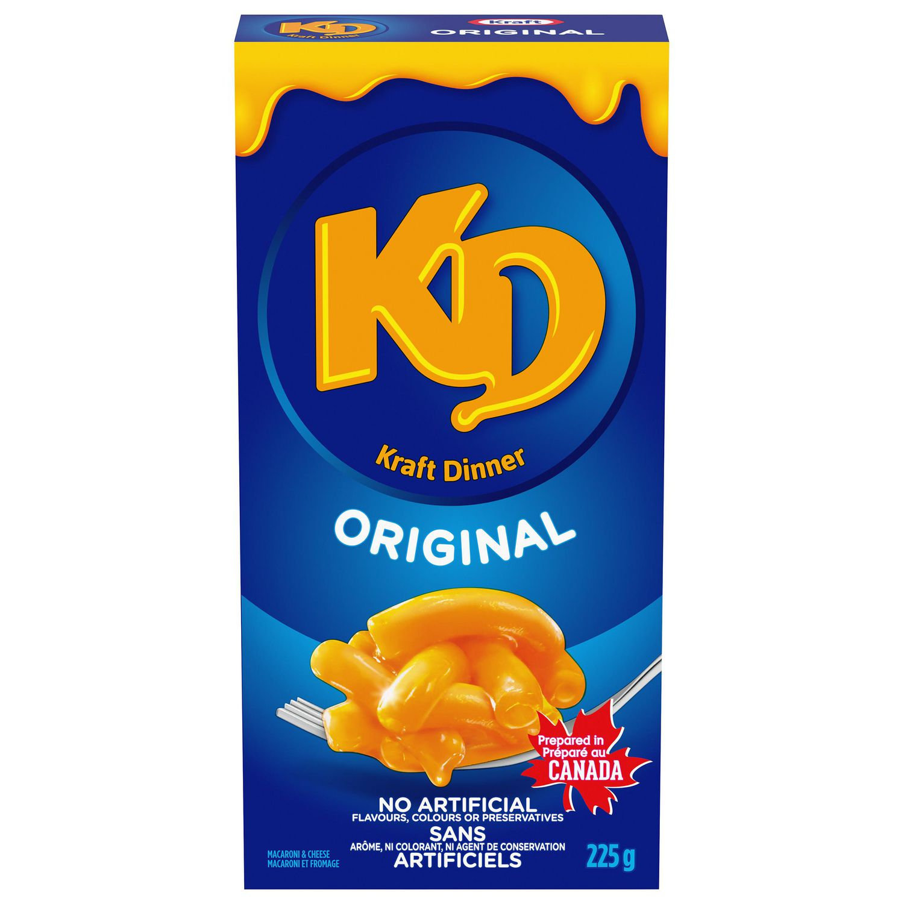

K.D. Mac N' Cheese

Description
K.D. is popular amongst college students for its low cost, ease of preparation, and delicious flavour. All you need is hot water and a bowl!
Ingredients
Steps
- Pour noodles into a bowl or pot.
- Add water.
- Place bowl into microwave, or pot onto stove.
- Cook until pasta is al dente.
- Drain water from pasta.
- Add cheese powder and stir.
- Enjoy!